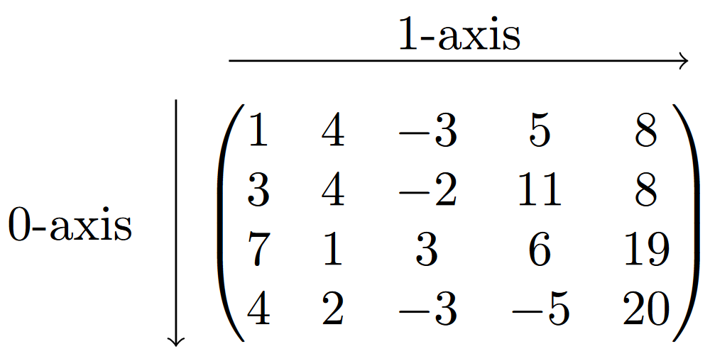

import numpy as np4 Vectorization
In this chapter we will explore the power of NumPy arrays by studying the concept of vectorization. Let us first import the NumPy package.
The idea of vectorization is that functions are designed so that they can efficiently handle multiple inputs simultaneously.
As an example, let’s implement the Heavyside function H, which is defined by H(x) = \left\{ \begin{array}{ll} 1 & \text{ if } x \geq 0 \\ 0 & \text{ if } x < 0 \end{array} \right.. That is, the function returns 1 if x is nonnegative, and 0 otherwise. If we are only interested in computing H(x) for a single value x, then the following function suffices.
# Heavyside function
def Heavyside(x):
if x >= 0:
return 1
else:
return 0
print('H(2) =', Heavyside(2))
print('H(-3) =', Heavyside(-3))H(2) = 1
H(-3) = 0Suppose now that we would want to compute the value H(x) for many values given in an array x = [x_0,\dots,x_{n-1}]; this you would need to do, e.g., if you want to visualize a function. One way to do this is to use a for-loop and append the value of H(x_i) to an (initially empty) list in iteration i.
n = 8
x = np.arange(-n,n)
h_values = []
for i in x:
h_values.append(Heavyside(i)) # append H(i) to list h_values
print(h_values)[0, 0, 0, 0, 0, 0, 0, 0, 1, 1, 1, 1, 1, 1, 1, 1]As mentioned earlier, for-loops are typically very time-inefficient and should be avoided whenever possible. It would be better if we could instead use another approach that can compute the function values more efficiently.
One approach to avoid the for-loop is with a Boolean statement. Recall from Chapter 2 that for an array x, the command x >= 0 will return a Boolean array containing True at position i if x_i \geq 0, and False if not. This command is an example of a vectorized operation: Although, mathematically speaking, it is defined to compare a number x with 0, the command also works if x is an array, in which case each of its elements get compared to 0.
comparison = (x >= 0) # Compare each element in x with 0
print(comparison)[False False False False False False False False True True True True
True True True True]The statement x >= 0 returns a Boolean array containing True and False, but the Heavyside function should ouput 1 and 0, respectively. To achieve this, we can convert the Boolean array to an array with ones and zeros.
This can be done with the astype() method, or by a clever multiplication: In Python, multiplying True with 1 gives 1, and False with 1 gives 0. Note that these are also examples of vectorized operations. For example, in the latter case, we multiply an array with one number, which Python executes by multiplying every element in the array with that number.
# Convert Boolean values to integers (True becomes 1, False becomes 0)
H = comparison.astype('int')
print(H)
# Multiply Boolean array with 1 (True*1 = 1, and False*1 = 0)
H2 = comparison*1
print(H2)[0 0 0 0 0 0 0 0 1 1 1 1 1 1 1 1]
[0 0 0 0 0 0 0 0 1 1 1 1 1 1 1 1]This means we can define the vectorized Heavyside function as follows, using the “multiplication with one” approach. We actually need less code for the vectorized version than in the original approach.
# Vectorized Heavyside function
def Heavyside(x):
return (x >= 0)*1
print(x)
print(Heavyside(x))[-8 -7 -6 -5 -4 -3 -2 -1 0 1 2 3 4 5 6 7]
[0 0 0 0 0 0 0 0 1 1 1 1 1 1 1 1]A vectorized function can handle higher-dimensional inputs.
For example, a function that is (mathematically speaking) defined for a single number can also handle one- or two-dimensional arrays as input, in which case the function computes the function value for every number in the array.
Or a function that is defined for a one-dimensional array, can also handle two-dimensional arrays as input, in which case it computes the function value for every (one-dimensional) row (inner list) of the two-dimensional array.
We remark that vectorizing a function should not result in additional for-loops, but should exploit the functionality that Python, and in particular NumPy, have to offer. We will see many examples of this later in this chapter.
In this course, you will typically be told which types of input data your function should be able to handle, so, e.g., it could be that you have to write a function that performs mathematical operations on a one-dimensional array, but that it should be able to handle two-dimensional arrays as well (again, in which case your function should compute the function value for every row of that array).
As an example of what you should not do, the following definition of the Heavyside function is also able to handle “higher dimensional” inputs, but it does so by looping over the elements of the input, which makes it again a slow function. To summarize, you should not “hide” additional for-loops in the function itself.
# Heavyside function
def Heavyside(x):
h = []
for i in x:
if i >= 0:
h.append(0)
else:
h.append(1)
return h
x = np.array([-2,-1,0,1,2])
print(Heavyside(x))[1, 1, 0, 0, 0]Also, it is not allowed to use functions like vectorize() from NumPy, because these are implemented essentially as a loop (as stated in the documentation of that function).
We continue with exploring vectorized functions within Python and NumPy.
4.1 Arithmetic operations
All basic arithmetic operations (addition, substraction, division, multiplication and comparison) are vectorized in Python. We will illustrate this with the addition operation +, but the same commands can be applied to the other arithmetic operations -, /, *, and >=, ==, <=, !=.
The addition operation + can be used to add two numbers together, as you well know. It can also add two arrays, i.e., it works as well for one- and two-dimensional arrays if they have the same shape. This is the usual addition operation you learn about when studying linear algebra.
x = np.array([1,4,7])
y = np.array([2,4,3])
print('x + y =\n',x+y)x + y =
[ 3 8 10]A = np.array([[1,2],[1,4]])
N = np.array([[7,9],[3,4]])
print('A + N = \n',A+N)A + N =
[[ 8 11]
[ 4 8]]Python is also able to handle addition of arrays of different shapes in certain cases, using the concept of broadcasting that we have seen before. For example, we can add a single number to any array, in which case Python adds this number to every element in the array. This can be seen as an instance of vectorization.
c = 5
print('A + c =\n', A+c)A + c =
[[6 7]
[6 9]]We can also add either a one-dimensional array x of size n to an m \times n matrix A. In this case, the array x gets added to every row of A:
\begin{align*} A + x = & \left[ \begin{matrix} a_{00} & a_{01} & \dots & a_{0(n-1)} \\ a_{10} & a_{11} & \dots & a_{1(n-1)} \\ \vdots & \vdots & \ddots & \vdots \\ a_{(m-1)0} & a_{(m-1)1} & \dots & a_{(m-1)(n-1)} \end{matrix} \right] + \left[ \begin{matrix} x_{0} & x_{1} & \dots & x_{(n-1)} \end{matrix} \right] \\ = & \left[ \begin{matrix} a_{00} + x_0 & a_{01} + x_1 & \dots & a_{0(n-1)} + x_{n-1} \\ a_{10} + x_0 & a_{11} + x_1 & \dots & a_{1(n-1)} + x_{n-1}\\ \vdots & \vdots & \ddots & \vdots \\ a_{(m-1)0} + x_0 & a_{m1} + x_1 & \dots & a_{(m-1)(n-1)} + x_{n-1} \end{matrix} \right] \end{align*}
In the example below, we have m = 3 and n = 2.
x = np.array([10,12])
print('Shape of x:', np.shape(x))
A = np.array([[1,2],[1,4],[3,1]])
print('Shape of A:', np.shape(A))
print('A + x = \n', A + x)Shape of x: (2,)
Shape of A: (3, 2)
A + x =
[[11 14]
[11 16]
[13 13]]Again, this can be seen as an instance of vectorization, since Python automatically adds x to every row of the matrix A.
Note that the shape of x is (n,) which is the syntax that Python uses to denote that x only has one dimension.
You can define x = [x_0,\dots,x_{n-1}] explicitly as a row vector of shape (1,n) by definingx = np.array([[x_0,...,x_{n-1}]]), that is, with double brackets. It is sometimes needed to change the shape of an array from (n,) to (1,n) or (n,1) to be able to use a function from NumPy.
Addition works in the same way if we define x explicitly as an array of shape (1,n).
x = np.array([[10,12]])
print('Shape of x:', np.shape(x))
A = np.array([[1,2],[1,4],[3,1]])
print('Shape of A:', np.shape(A))
print('A + x =\n', A + x)Shape of x: (1, 2)
Shape of A: (3, 2)
A + x =
[[11 14]
[11 16]
[13 13]]The same works if we define x = [x_0,\dots,x_{m-1}]^T as a column array of shape (m,1), in which case it gets added to every column of the matrix A of shape (m,n):
\begin{align*} A + x = & \left[ \begin{matrix} a_{00} & a_{01} & \dots & a_{0(n-1)} \\ a_{10} & a_{11} & \dots & a_{1(n-1)} \\ \vdots & \vdots & \ddots & \vdots \\ a_{(m-1)0} & a_{(m-1)1} & \dots & a_{(m-1)(n-1)} \end{matrix} \right]+ \left[ \begin{matrix} x_{0} \\ x_{1} \\ \vdots \\ x_{(m-1)} \\ \end{matrix} \right] \\ = & \left[ \begin{matrix} a_{00} + x_0 & a_{01} + x_0& \dots & a_{0(n-1)} + x_0\\ a_{10} + x_1 & a_{11} + x_1& \dots & a_{1(n-1)} + x_1\\ \vdots & \vdots & \ddots & \vdots\\ a_{(m-1)0} + x_{m-1} & a_{(m-1)1} + x_{m-1} & \dots & a_{(m-1)(n-1)} + x_{m-1} \end{matrix} \right] \end{align*}
x = np.array([[10],[12],[14]])
print('Shape of x:', np.shape(x))
A = np.array([[1,2],[1,4],[3,1]])
print('Shape of A:', np.shape(A))
print('A + x =\n', A + x)Shape of x: (3, 1)
Shape of A: (3, 2)
A + x =
[[11 12]
[13 16]
[17 15]]We cannot add arrays of any dimensions to each other. For example, if we would try to add a a 2 \times 2 array to a 4 \times 2 array, then Python will return ValueError: operands could not be broadcast together with shapes (4,2) (2,2), i.e., Python cannot perform this addition.
4.1.1 Multiplication broadcasting
We emphasize that the broadcasting concepts above also apply to the multiplication operator *. That is, if x is a column array then A*x multiplies every column of A in a pointwise fashion with the array x. Similarly, for two matrix A and B, the syntax A*B returns a matrix in which all elements of A and B are pointwise multiplied with each other, that is, entry (i,j) contains a_{ij}\cdot b_{ij}.
This is not the same as, e.g., the matrix-vector multiplication Ax in the linear algebra sense, i.e,
\begin{align*} Ax = & \left[ \begin{matrix} a_{00} & a_{01} & \dots & a_{0(n-1)} \\ a_{10} & a_{11} & \dots & a_{1(n-1)} \\ \vdots & \vdots& \ddots & \vdots\\ a_{(m-1)0} & a_{(m-1)1} & \dots & a_{(m-1)(n-1)} \end{matrix} \right]\left[ \begin{matrix} x_{0} \\ x_{1} \\ \vdots \\ x_{(m-1)} \\ \end{matrix} \right] \\ = & \left[ \begin{matrix} a_{00}x_0 + a_{01}x_1 + \dots + a_{0(n-1)}x_{n-1}\\ a_{10}x_0 + a_{11}x_1 + \dots + a_{1(n-1)}x_{n-1}\\ \vdots \\ a_{(m-1)0}x_0 + a_{(m-1)1}x_1 + \dots + a_{(m-1)(n-1)}x_{n-1}\\ \end{matrix} \right] \end{align*}
We will see matrix-vector and matrix-matrix multiplications in the linear algebra sense later in this book.
4.2 Mathematical functions
Many mathematical functions in NumPy are also vectorized by default. Here you should think of functions like
- Trigonometry:
sin(),cos(),tan() - Exponentation and logarithms:
exp(),log(),log10(),log2() - Rounding:
around(),floor(),ceil() - Division with remainder:
mod(),divmod() - Power computation:
sqrt(),abs(),power()
You access them using np.function_name(). Let us look at some examples; you can check out the documentation of the other functions yourself.
x = np.array([2,1,6])
# Compute sin(i) for every element i in x
y = np.sin(x)
print(y)[ 0.90929743 0.84147098 -0.2794155 ]A = np.array([[2,1,6],[1,1,3]])
# Compute e^i for every element i in A
y = np.exp(A)
print(y)[[ 7.3890561 2.71828183 403.42879349]
[ 2.71828183 2.71828183 20.08553692]]x = np.array([1.249583, 3.110294, 4.51139])
# Round every number in x to two decimals
x = np.around(x, decimals=2)
print(x)[1.25 3.11 4.51]x = np.array([10,9,4])
y = np.array([2,4,5])
# Compute x_i (mod y_i) for all i
# and output divisor and remainder
z = np.divmod(x,y)
print(z)(array([5, 2, 0]), array([0, 1, 4]))np.divmod() outputs two arrays: the divisors and the remainder. For example, looking at x[1] = 9 and y[1] = 4: the number 4 fits twice in 9, after which 1 is left, i.e., 9 = 2 \cdot 4 + 1. The number 2 appears in the second position of the first array, and the remainder 1 in the second position of the second array.
A = np.array([[2,3,6],[4,2,3]])
N = np.array([[1,2,3],[1,2,3]])
# Pointwise compute a_{ij}^n_{ij} for all i,j
P = np.power(A,N)
print(P)[[ 2 9 216]
[ 4 4 27]]4.3 Operations along array axes
Another efficient way to perform vectorized operations is to exploit the fact that many NumPy functions that perform an operation on a one-dimensional array, can also be used for two-dimensional arrays where the operation is then either performed on every column (i.e., along the 0-axis), or on every row (i.e., along the 1-axis).

We will look at some examples of this in the next sections.
4.3.1 Sorting and searching
The function sort() can be used to sort the elements in a one-dimensional array in ascending order, i.e., smallest to largest.
x = np.array([0.89, 0.5, 0.57, 0.34])
# Sort and print the elements in x
x_ascending = np.sort(x)
print(x_ascending)[0.34 0.5 0.57 0.89]It is not possible to use sort() to sort in descending order, i.e., largest to smallest, but this can be accomplished by reversing the sorted array. We can do this using index slicing with a step size of -1, starting at position -1, meaning that Python goes backwards through the array.
# Access x from beginning till end with step size -1
x_descending = x_ascending[-1::-1]
print(x_descending)[0.89 0.57 0.5 0.34]Vectorizing the (ascending) sort operation means we want to have a function that can take as input a two-dimensional array, and return for every row (or column) the sorted list of numbers. It turns out that sort() can do this right away, by adding an additional keyword argument axis.
Adding axis=0 means that Python will sort the numbers in every column, i.e., along the 0-axis, and axis=1 will sort numbers in every row, i.e., along the 1-axis.
A = np.array([
[0.89, 0.5, 0.57, 0.34],
[0.61, 0.12, 0.04, 1. ],
[0.27, 0.26, 0.28, 0.25],
[0.9, 0.84, 0.15, 1. ]])
# Sort elements in every column
A_col_ordered = np.sort(A,axis=0)
print(A_col_ordered)[[0.27 0.12 0.04 0.25]
[0.61 0.26 0.15 0.34]
[0.89 0.5 0.28 1. ]
[0.9 0.84 0.57 1. ]]# Sort elements in every row
A_row_ordered = np.sort(A,axis=1)
print(A_row_ordered)[[0.34 0.5 0.57 0.89]
[0.04 0.12 0.61 1. ]
[0.25 0.26 0.27 0.28]
[0.15 0.84 0.9 1. ]]We remark that sort() creates a copy, and not a view of the original matrix (see Chapter 3.7).
Another useful sorting function is argsort() that, for a given array x = [x_0,\dots,x_{n-1}] outputs an array whose i-th element is the position of the number in x that appears in place i in the ordered array np.sort(x).
x = np.array([0.89, 0.5, 0.57, 0.34])
# Position in original array or elements in ordered list
order = np.argsort(x) # np.sort(x) = [0.34, 0.5, 0.57, 0.89]
print(order)
# Obtaining sort() from argsort()
print(x[order])[3 1 2 0]
[0.34 0.5 0.57 0.89]In the example above, in the ordered list np.sort(x) the first number is 0.34, which appears at position 3 in x; the second number is 0.5, which appears at position 1 in x, the third number is 0.57 which appears in position 2 in x; and the fourth number is 0.89, which appears in position 0 in x.
This function also works for two-dimensional arrays. For example, determining the relative order of the elements in every column can be done by adding axis=0 (and similarly in every row by using axis=1).
A = np.array([
[0.89, 0.5, 0.57, 0.34],
[0.61, 0.12, 0.04, 1. ],
[0.27, 0.26, 0.28, 0.25],
[0.9, 0.84, 0.15, 1. ]])
# Determine relative order in every column
N = np.argsort(A,axis=0)
print(N)[[2 1 1 2]
[1 2 3 0]
[0 0 2 1]
[3 3 0 3]]4.3.2 Summary statistics
There are various other mathematical functions that can perform operations along axes by adding the axis keyword argument. Here we list some common ones from NumPy, that yield so-called summary statistics of a (one-dimensional) array:
- Sum and product:
sum(),prod(), - Mean, standard deviation, median:
mean(),std(),median() - Maximum and minimum:
max(),min().
We will illustrate the use of these six functions using max(), but the same code applies to all other functions (if the task at hand is mathematically well-defined).
A = np.array([
[2,3,6],
[4,2,3]
])If we apply the max() function directly to a (two-dimensional) array, it will give the maximum value in the whole array.
# Gives maximum of all elements in A
A_max = np.max(A)
print(A_max)6If we add the axis keyword argument, we can either obtain the maximum of every row, or every column.
# Gives maximum of every column
A_column_max = np.max(A,axis=0)
print(A_column_max)[4 3 6]# Gives max of every row
A_row_max = np.max(A,axis=1)
print(A_row_max)[6 4]Another useful function is argmax() than can return the index (position) at which the maximum in an array is attained.
# Gives position of maximum in every column
A_col_argmax = np.argmax(A,axis=0)
print(A_col_argmax)[1 0 0]# Gives position of maximum in every row
A_row_argmax = np.argmax(A,axis=1)
print(A_row_argmax)[2 0]Note that the array containing the positions of the maxima is given as a row array. If you want to turn this into a column array (because the rows are ordered vertically in a two-dimensional array), recall you can do this as follows.
A_row_argmax = A_row_argmax[:,None]
print(A_row_argmax)[[2]
[0]]If we try np.argmax(A) without using the axis keyword argument, then Python first flattens the matrix into a one-dimensional array, after which it returns the position of the maximum in the flattened array. Note that this flattening happens according to the largest index changing fasted principle (so it it places all the rows after each other, and not all the columns under each other).
Also note that if the maximum is attained in multiple places, then Python only returns the position of the first element that attains the maximum.
# Gives position of maximum
N = np.array([
[2,3,4],
[4,4,3]
])
N_argmax = np.argmax(N) # Turns N into [2,3,4,4,4,3];
# returns first position with maximum
print(N_argmax)2There are also more advance functions that give some summative information about an array:
- Cumulative sum:
cumsum(), - Cumulative product:
cumprod().
The function cumsum() return the cumulative sum of a one-dimensional array. As an example, if x = [1,4,2,5], then the cumulative sums will be given by
x_{\text{cumsum}} = [1, 1 + 4, 1 + 4 + 2, 1 + 4 + 2 + 5] = [1,5,7,12].
x = np.array([1,4,2,5])
# Cumulative sum of x
x_cumsum = np.cumsum(x)
print('x_cumsum =', x_cumsum)x_cumsum = [ 1 5 7 12]The function can also be vectorized using the axis keyword argument.
The function cumprod() returns the cumulative product. Again, if x = [1,4,2,5], then the cumulative products will be given by
x_{\text{cumprod}} = [1, 1 \cdot 4, 1 \cdot 4 \cdot 2, 1 \cdot 4 \cdot 2 \cdot 5] = [1,4,8,40].
x = np.array([1,4,2,5])
# Cumulative product of x
x_cumprod = np.cumprod(x)
print('x_cumprod =', x_cumprod)x_cumprod = [ 1 4 8 40]This function can also be vectorized using the axis keyword argument.